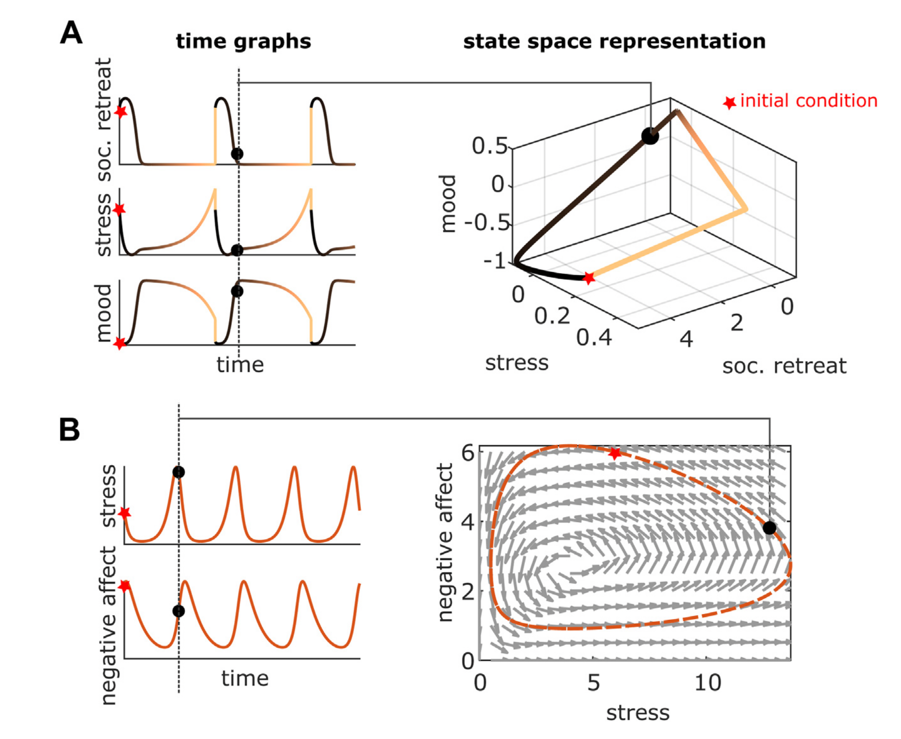

Canalization and plasticity in psychopathology
The gist
Say something bad happens to you. This leads you to develop certain strategies and behaviors that make you feel safe and free from pain. Some are healthy while others are less so. The less healthy ones become pathological when they are no longer useful and potentially harmful, yet are still being employed (Context is important here. See here and here for more on this). This can happen because the individual may not or cannot perceive and act otherwise. As a result the strategies and behaviors used to cope are further reinforced. They are more deeply learned, which is reflected in the psychological “state space” (the possible ways a person could behave or respond) of the individual. One could thus describe psychopathological behavior as a consequence of overlearning in response to adversity. In a literal sense, the mind/behavioral repotoire/range of expression of this individual is stuck in a rut. This rut, how it forms, and its relationship to psychopathology is the basis of a recent paper by Carhart-Harris et al (2023). The authors draw from key ideas in basic neuroscience and complex systems to describe how psychopathology arises in the most general sense.
Put me in (a box) coach
Science is partly a game of coming up with simple and plausible explanations for complex phenomena. That’s the framework we’re working with here. Come up with a parsimonious theory that can explain what we see in the world.
One such theory is the p-factor of psychopathology. The p-factor is a theoretical construct that accounts for a large portion of the phenotypic variance (how a person presents, their mindset and range of behavior, etc) that is typical of psychopathology. It’s analogous to g, the general factor of intelligence, wherein a bunch of cognitive tests are administered to determine a general score of intelligence. The goal is to reduce the complexity of your data down to a single indicator or proxy of the thing we care about (e.g. psychopathology, intelligence. See here for some criticisms of g and factor analysis in general). Psychologists and neuroscientists like putting people and things into boxes, and this is a popular way of doing it. Models situate their theories on the chopping block.
For further context, symptoms of psychopathology can be characterized along three dimensions, or factors: internalizing (e.g. low mood), externalizing (e.g. following rules) and thought disorders (e.g. grandiosity). These factors “explain” the correlations between observed symptoms (e.g. responses on a mental health questionnaire) and are useful in categorizing them. We might say that someone who scores poorly on measures of rumination, mood, and mind-racing has a high degree of internalizing. Internalizing is a summary variable, a factor, of reported symptoms.
The p-factor further simplifies the three factor model mentioned above. The addition of a p-factor in this kind of analysis (factor analysis) has been shown to explain more variance in psychopathology symptoms than the three-factor model does alone (see here for more on the p-factor).
Boxes are useful
Why is this relevant? Well, the p-factor model assumes that there is a single cause or source of psychopathology. Analogous to intelligence scores, the p-factor attempts to explain why many mental disorders present with comorbidities and share symptoms, for example. The presumption is that there is a common cause to all this. That’s what the p-factor model tries to validate. (It must be said that models are ways to test theories – they are not theories themselves. In other words, just because the p-factor can be “found” doesn’t mean that there is a single explanation)
A shortcoming of the p-factor approach is that it doesn’t really tell you anything about how psychopathology works, or why it arises. There’s no mechanism presented, only that a common cause might exist and can explain the correlations in your data. That’s the magic of the paper here. The authors present a theoretical model of what causes and characterizes psychopathology. They argue that psychopathology is the result “canalization”, a process that ultimately results in reduced variation in the range of phenotypes (how someone behaves, the thoughts they have, etc) expressed by an individual. The rest of the paper theorizes how and why this happens and why it’s a useful lens for understanding mental health.
Our general theory states that: cognitive and behavioral phenotypes that are regarded as psychopathological, are canalized features of mind, brain, or behavior that have come to dominate an individual’s psychological state space. We propose that the canalized features develop as responses to adversity, distress, and dysphoria, and endure despite, rather than because of, evidence. We also propose that their depth of expression or entrenchment determines, to a large extent, the severityof the psychopathology, including its degree of treatment-resistance and susceptibility to relapse.
I will die on this hill
All of this is quite abstract, so let’s get concrete. Imagine a lush landscape populated by many green hills. Picture too a ball that rolls around on this landscape. Assume it obeys the laws of physics and can get stuck in the valleys formed by the hills. Some valleys are deep and steep, meaning that they’re hard to escape from, while others are shallow and easy to hop between.
The landscape represents all possible states that the system can be in, as indicated by where the ball is at any point in time. Its location can be described as a set of coordinates, where each coordinate corresponds to a variable that we care about. For example, how aroused someone is might be a variable as well as something like their overall emotional valence.

Now, if we decide to pick up the ball with our godly powers, drop it somewhere randomly on the landscape, and keep track of where it goes over some period of time, we might notice some patterns. We might see that no matter where it starts it tends to end up in one particular section of the landscape, suggesting that the system (the individual) has a tendency to fall back into a particular “state”, a particular valley, no matter how happy or aroused they are in a given moment. This can characterize something like depression. We can view it as a particular valley that the ball tends to get stuck in. The valley itself is a deep and prominent feature of the individual’s inner landscape.
Not all valleys are bad. Healthy states are also valleys. How they form is ultimately the result of learning and experience. The shape of our inner landscape and the prominence of its various valleys is reflective of our personal tendencies—the moods, behaviors, habits, thoughts, and so on that we tend to express. In the nomenclature of dynamical systems, the valleys are “attractor basins.” They’re the stable states that the system tends to settle in over time. Psychotherapy can be viewed as an attempt to shape the landscape, and an effort to nudge the ball into the home of more positive valleys.
Other relevant reads
Something I find beautiful is the ubiquity and usefulness of dynamical systems in describing natural phenomena. The metaphor of a landscape is an apt description of what might be happening under the hood, and it is aligned with the postulates of a particular branch of mathematics. The rest of the paper is really good—read it for more details!